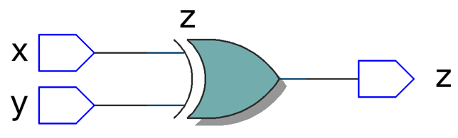

module example3 ( input x,, output z ); always ()begin = x [blank1] y; end endmodule 1. Which design level is used in this module? (gate, dataflow, behavioral) 2. For the [blank1], which operation is use for a and b to output y?(|,&,^) 
